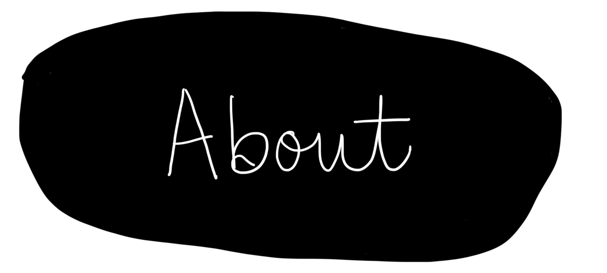
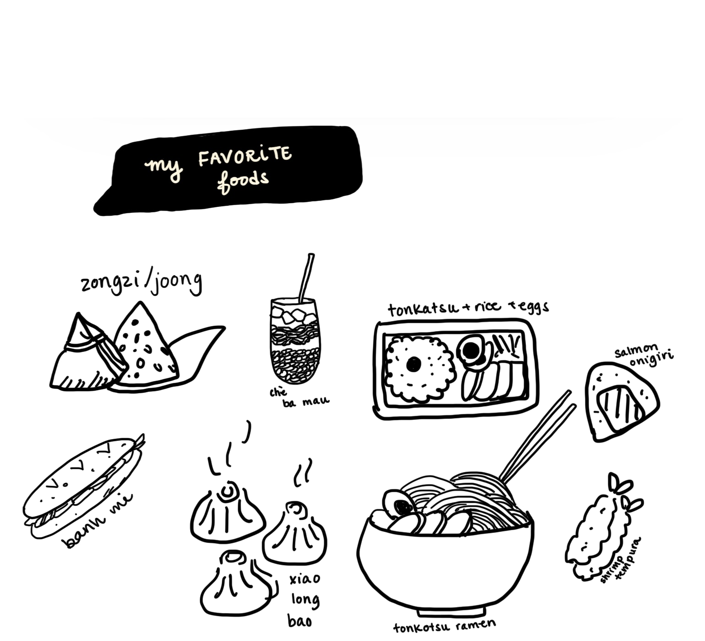
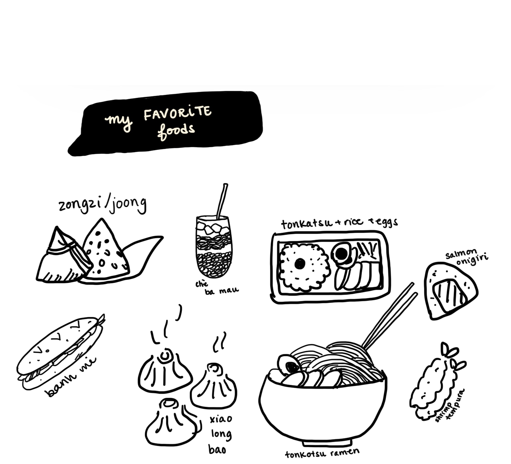

Welcome to my kitchen! I’m Jenny, a passionate home cook with a heart full of love for vietnamese, chinese, japanese and korean cuisine. Join me on this culinary adventure as we explore delicious recipes, share cooking tips, and savor the vibrant flavors of these incredible food traditions. Let’s embark on a flavorful journey together!

